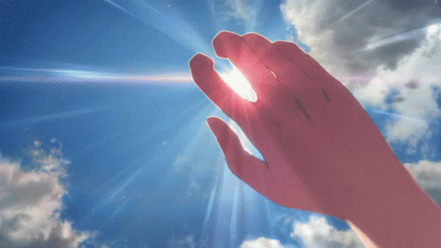
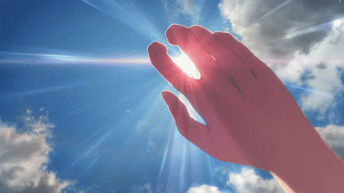

Hodaka sees Hina being intimidated into working at a back-alley club. After a brief chase, he scares off the club owners by firing his gun into the air, thinking it was a toy. He and Hina escape; she takes him to Yoyogi Kaikan, an abandoned building with a shrine on the roof, where he throws the gun away. Hina astonishes Hodaka by demonstrating her ability to clear the sky by praying.
 
